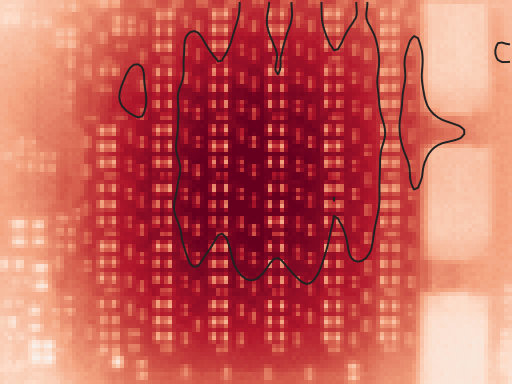
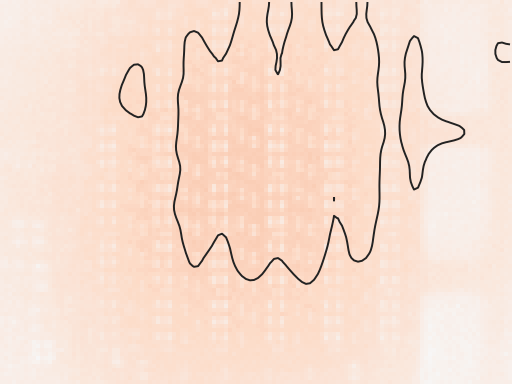
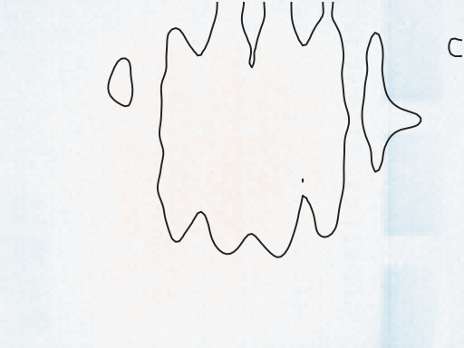
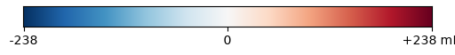

Weighing flipped bits with heat: the camera half of the Hamming ladder
E60 weighed a flipped bit with the board's power meter. This experiment weighs it with heat. The thermal camera behind aifoundry2's card watched the back of the board while 256 of the chip's cores switched every 10 seconds between E60's top rung, with all 23 mantissa bits of one operand flipping on every cycle, and its zero, the same arithmetic with nothing flipping. The flips put 5.44 W on the board, and the back of the board followed: 194 ± 9 mK at 0.05 Hz over the die, 59 mK per watt of power at that frequency, the heat 87° (about 5 s) behind the power. A middle rung moved it in proportion to its watts, a null of equal watts in the same place stayed flat, and the whole run repeated on 192 cores.
The camera reads the watts the flips draw
The numbers
| session | block | board step, W | SE | camera along the top rung's phase, mK | SE |
|---|---|---|---|---|---|
| session 1, 256 minions | null: ones vs pi | -0.044 | 0.006 | -3.3 | 15.0 |
| session 1, 256 minions | middle rung, lq_h8 | +1.496 | 0.009 | +44.7 | 14.4 |
| session 1, 256 minions | top rung, lq_h23 | +5.443 | 0.008 | +192.9 | 13.2 |
| session 1, 256 minions | top rung again | +5.457 | 0.011 | +177.4 | 14.5 |
| session 2, 192 minions | null: ones vs pi | -0.033 | 0.006 | -13.3 | 8.4 |
| session 2, 192 minions | middle rung, lq_h8 | +1.109 | 0.006 | +36.3 | 3.8 |
| session 2, 192 minions | top rung, lq_h23 | +4.020 | 0.014 | +118.5 | 11.7 |
| session 2, 192 minions | top rung again | +4.038 | 0.012 | +103.6 | 22.1 |
The middle rung, eight flipping bits instead of 23, added 1.50 W and moved the camera 49 ± 10 mK: 0.24 of the top rung's amplitude where its power was 0.27 of the top rung's. The top rung run again at the end of the session read 179 ± 9 mK. Session 2, the same run on 192 cores, put 4.02 W on the board and read 119 ± 13 mK, 30 mK per watt switched against session 1's 36. The camera's gain fell through the hour as the board and the camera warmed: 59, 53, 48 and 42 mK per watt for the four top-rung blocks in order, the lag growing from 87° to 109°. Each session's middle rung is read against its own top rungs, before and after it.
One cycle, averaged
The numbers
| block | 0.25 s | 2.25 s | 4.25 s | 6.25 s | 8.25 s | 10.25 s | 12.25 s | 14.25 s | 16.25 s | 18.25 s |
|---|---|---|---|---|---|---|---|---|---|---|
| top rung, lq_h23 | -10.67 | +4.67 | +4.74 | +4.92 | +3.82 | -11.39 | -0.60 | -0.65 | -0.55 | -0.92 |
| middle rung, lq_h8 | -9.81 | +2.39 | +2.48 | +2.53 | +2.60 | -9.97 | +0.91 | +0.83 | +0.93 | +0.90 |
| null: ones vs pi | -9.26 | +1.61 | +1.65 | +1.59 | +1.63 | -9.06 | +1.63 | +1.66 | +1.71 | +1.21 |
The numbers
| block | 0.25 s | 2.25 s | 4.25 s | 6.25 s | 8.25 s | 10.25 s | 12.25 s | 14.25 s | 16.25 s | 18.25 s |
|---|---|---|---|---|---|---|---|---|---|---|
| top rung, lq_h23 | -140.8 | -268.6 | -148.3 | +90.2 | +238.0 | +273.3 | +51.6 | -1.9 | -32.0 | -41.1 |
| middle rung, lq_h8 | -39.4 | -154.3 | -77.7 | +15.6 | +115.1 | +129.5 | -38.6 | -9.2 | +24.0 | +60.9 |
| null: ones vs pi | +53.6 | -58.9 | -48.8 | +5.2 | +52.0 | +70.9 | -35.9 | -48.2 | -33.4 | +35.0 |
Where it shows
Each block's amplitude at 0.05 Hz, pixel by pixel, along the top rung's phase, all on one scale. The outline is the warm quarter of the frame under all 32 shires in E62, the region the numbers are read from. The top rung's map reads 194 mK there and 143 mK over the whole frame: the board spreads the heat wider than the camera's view.




Lap by lap
The numbers
| block | laps | in phase, mK | quarter cycle later, mK | amplitude, mK | phase, degrees |
|---|---|---|---|---|---|
| null: ones vs pi | 18 | +24.7 | +4.8 | 25.2 | 11 |
| middle rung, lq_h8 | 18 | +48.0 | +32.6 | 58.0 | 34 |
| top rung, lq_h23 | 21 | +13.7 | +179.6 | 180.1 | 86 |
| top rung again | 15 | -39.8 | +156.4 | 161.3 | 104 |
Board, not camera
Three checks say the signal is heat on the board and not the camera. The map carries the capacitor field's pattern: the shiny terminations under-report, as they did when E62 warmed the whole die (the fine detail of the two maps correlates 0.91), and a camera artefact would not know where the capacitors are. The focal plane's own thermistor shows nothing at 0.05 Hz (p 0.36) and does not follow the board (correlation 0.06). The header field the decoder calls the focal-plane temperature turned out to be the scene's mean: it ran about 5 °C above the board's frame mean all session and followed it (correlation 0.58), so it saw the signal too, 0.25 K for the top rung. And the null, the same cores switching between operands of equal watts, reads 2 ± 15 mK.
The shutter, planned around
The camera's automatic shutter fired 6.3 times a minute during the top rung, and every time it reset the offset of every pixel (it fired about seven times a minute with the card idle, too). So the registered fit never bridges a step: it gives each stretch between two shutter events its own free offset and reads the 0.05 Hz signal only from the variation inside the stretches, with a slow spline for the camera's drift. The events fell at no preferred phase of the cycle (Rayleigh p 0.997). Read plainly off the bridged frames, the top rung gives the same 193 mK with twice the error, ± 18. And bridging can fail outright: in session 2 one step was bridged about 5 K wrong in the middle of the middle rung's block, and the plain lock-in reads 127 ± 119 mK there, where the registered fit, which never bridges, reads 36 ± 3.
The registered tests
| Decision rule, frozen before the run | Session 1, 256 cores | Session 2, 192 cores |
|---|---|---|
| 1. The camera sees the top rung (p < 0.001, warming that lags the power) | PASS | PASS |
| 2. The top rung holds 800 MHz (95% of its launches clean) | FAIL | PASS |
| 3. The null is flat | PASS | PASS |
| 4. The middle rung scales with its watts | PASS | PASS |
| 5. The top rung repeats | PASS | PASS |
800 MHz, and a one-second dip
The top rung on 256 cores held the die at 56.5 °C, at most 57.3, well under the governor's 65 °C step, and 98.8% of its samples after each launch's ramp read 800 MHz. But in 8 of 360 launches over both sessions the clock fell to 600 MHz for about a second, anywhere from 1.5 to 8.4 s into a launch, at every load, the null's included. That broke rule 2's 95% bar in session 1 (39 of 42 launches clean), and amendment A1 repeated the run on 192 cores as the rule said to; there the top rung held (41 of 42 launches clean). Every dip has the same shape, the clock straight to its boot point and back up through 700 MHz, like the governor's reset for an idle card and its climb at the start of a launch; it is not heat and not the power limit, and the heater's own launches ran on through it. The camera numbers include it, and so does the measured power they are divided by.
How it ran
aifoundry2 as it is, the camera's settings untouched, so the public live view kept its look. E60's own operand files, checked byte for byte on the card first; the Horace kernel on 8 cores in each of the 32 shires, since the full card would heat past the governor's step within minutes of switching. One 8.5 s launch per 10 s phase, so every on-window was under 9.5 s and the arms switched on a fixed 20 s grid. Four blocks per session: the top rung (7 min analysed after 3 min of warm-up), the null (6 min), the middle rung (6 min) and the top rung again (5 min). Code, pre-registration and amendments: tools/claims-v3/hlc; data: docs/reports/data/2026-10-23-e63-camera-hamming-ladder. Before it: what one flipped bit costs (E60) and heat follows the work (E62).